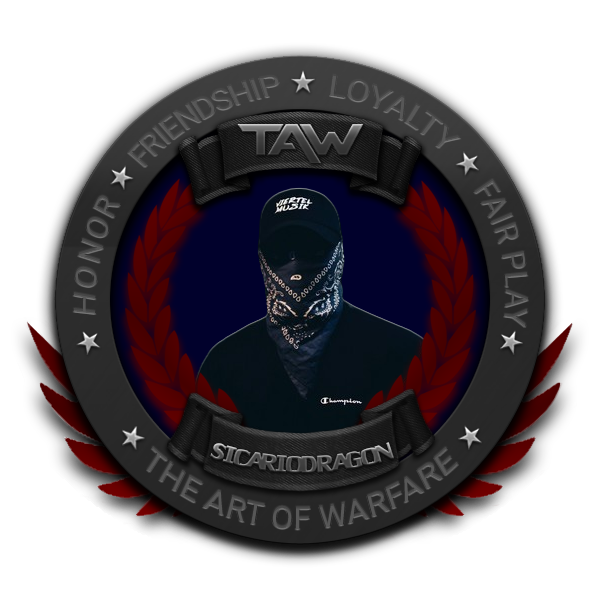

← Back to Home

Fun Facts
-
I am in no way affiliated with Sic4rio the Swiss rapper — but he is my favorite! 🎵
Check out my Sic4rio playlist.
-
Since Sic4rio is my favorite rapper and I’ve called myself Dragon for years, I combined them into Sic4rioDragon because it sounds awesome!
-
I am Swiss — I just got the .uk domain because it was the cheapest!
-
This site is totally self-hosted for free via Cloudflare Pages & GitHub —
view the repo.
Updates go live in under a minute.
-
Some of my favorite games are DayZ, TF2, Ark: Survival Evolved, Chivalry 2, Ghost Recon Wildlands, Ready or Not, and more!
-
I’m planning a Games page soon to show live Steam stats for my top games—integrated with my
SteamDB profile.